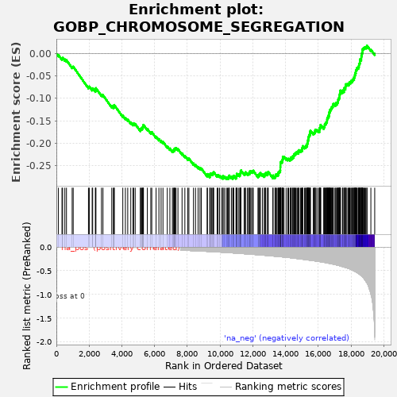
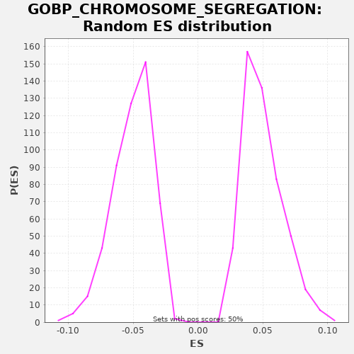

| | | Dataset | A_X_tradeoff |
| Phenotype | NoPhenotypeAvailable |
| Upregulated in class | na_neg |
| GeneSet | GOBP_CHROMOSOME_SEGREGATION |
| Enrichment Score (ES) | -0.28042436 |
| Normalized Enrichment Score (NES) | -5.5759873 |
| Nominal p-value | 0.0 |
| FDR q-value | 0.0 |
| FWER p-Value | 0.0 |
Table: GSEA Results Summary

Fig 1: Enrichment plot: GOBP_CHROMOSOME_SEGREGATION
Profile of the Running ES Score & Positions of GeneSet Members on the Rank Ordered List
| SYMBOL | RANK IN GENE LIST | RANK METRIC SCORE | RUNNING ES | CORE ENRICHMENT | | 1 | TTN | 125 | -0.001 | -0.0031 | No |
| 2 | RMDN1 | 343 | -0.002 | -0.0110 | No |
| 3 | HORMAD2 | 381 | -0.002 | -0.0095 | No |
| 4 | MSH4 | 518 | -0.003 | -0.0131 | No |
| 5 | SMC1B | 617 | -0.003 | -0.0148 | No |
| 6 | CHMP4C | 965 | -0.005 | -0.0295 | No |
| 7 | MUS81 | 1028 | -0.006 | -0.0293 | No |
| 8 | WRAP73 | 1961 | -0.011 | -0.0745 | No |
| 9 | MAPK15 | 2010 | -0.011 | -0.0735 | No |
| 10 | STAG3 | 2187 | -0.012 | -0.0793 | No |
| 11 | M1AP | 2218 | -0.012 | -0.0774 | No |
| 12 | NDE1 | 2382 | -0.013 | -0.0825 | No |
| 13 | PINX1 | 2406 | -0.013 | -0.0803 | No |
| 14 | KATNB1 | 2414 | -0.014 | -0.0772 | No |
| 15 | PMF1 | 2756 | -0.016 | -0.0915 | No |
| 16 | NEK6 | 2848 | -0.016 | -0.0929 | No |
| 17 | NUP62 | 3385 | -0.020 | -0.1174 | No |
| 18 | ANAPC5 | 3481 | -0.021 | -0.1189 | No |
| 19 | NSMCE2 | 3529 | -0.021 | -0.1179 | No |
| 20 | CDC42 | 3535 | -0.021 | -0.1148 | No |
| 21 | USP44 | 4059 | -0.025 | -0.1386 | No |
| 22 | ANKRD31 | 4217 | -0.026 | -0.1434 | No |
| 23 | KIF22 | 4360 | -0.028 | -0.1473 | No |
| 24 | MAD2L1BP | 4547 | -0.029 | -0.1536 | No |
| 25 | NEK11 | 4682 | -0.031 | -0.1572 | No |
| 26 | SYCP1 | 4719 | -0.031 | -0.1556 | No |
| 27 | CHMP4B | 4816 | -0.032 | -0.1572 | No |
| 28 | NEK8 | 5131 | -0.035 | -0.1701 | No |
| 29 | PLSCR1 | 5147 | -0.035 | -0.1675 | No |
| 30 | NAA10 | 5213 | -0.036 | -0.1674 | No |
| 31 | MEI4 | 5250 | -0.036 | -0.1659 | No |
| 32 | RGS14 | 5277 | -0.036 | -0.1638 | No |
| 33 | SKA1 | 5307 | -0.037 | -0.1619 | No |
| 34 | ZCWPW1 | 5321 | -0.037 | -0.1591 | No |
| 35 | CIAO1 | 5559 | -0.040 | -0.1681 | No |
| 36 | MEIOB | 5770 | -0.042 | -0.1756 | No |
| 37 | RMI2 | 5829 | -0.043 | -0.1752 | No |
| 38 | GEM | 6093 | -0.046 | -0.1855 | No |
| 39 | NTMT1 | 6265 | -0.048 | -0.1909 | No |
| 40 | PSRC1 | 6398 | -0.050 | -0.1944 | No |
| 41 | KLHL22 | 6514 | -0.052 | -0.1970 | No |
| 42 | TEX11 | 6777 | -0.055 | -0.2072 | No |
| 43 | RAN | 6935 | -0.058 | -0.2120 | No |
| 44 | TUBG1 | 7090 | -0.060 | -0.2166 | No |
| 45 | HECW2 | 7148 | -0.060 | -0.2161 | No |
| 46 | HDAC8 | 7198 | -0.061 | -0.2152 | No |
| 47 | NCAPH2 | 7213 | -0.061 | -0.2125 | No |
| 48 | ANAPC11 | 7256 | -0.062 | -0.2113 | No |
| 49 | UBE2B | 7311 | -0.063 | -0.2106 | No |
| 50 | CDC26 | 7429 | -0.065 | -0.2133 | No |
| 51 | CENPS | 7679 | -0.068 | -0.2229 | No |
| 52 | AGO4 | 7851 | -0.071 | -0.2284 | No |
| 53 | CHMP2B | 8025 | -0.073 | -0.2340 | No |
| 54 | P3H4 | 8098 | -0.075 | -0.2343 | No |
| 55 | MAP10 | 8378 | -0.079 | -0.2454 | No |
| 56 | CCNB1IP1 | 8502 | -0.081 | -0.2484 | No |
| 57 | SYCP2 | 8659 | -0.084 | -0.2531 | No |
| 58 | MLH1 | 8774 | -0.086 | -0.2556 | No |
| 59 | SPICE1 | 8855 | -0.088 | -0.2563 | No |
| 60 | TOP3B | 9212 | -0.093 | -0.2715 | No |
| 61 | CDC16 | 9231 | -0.094 | -0.2690 | No |
| 62 | PRDM9 | 9379 | -0.097 | -0.2732 | No |
| 63 | EME2 | 9380 | -0.097 | -0.2698 | No |
| 64 | EML3 | 9411 | -0.097 | -0.2679 | No |
| 65 | SYCE1L | 9488 | -0.099 | -0.2684 | No |
| 66 | UBE2I | 9555 | -0.100 | -0.2684 | No |
| 67 | DIS3L2 | 9577 | -0.100 | -0.2661 | No |
| 68 | TRAPPC12 | 9614 | -0.101 | -0.2645 | No |
| 69 | CIAO2A | 9822 | -0.106 | -0.2719 | No |
| 70 | CENPT | 9880 | -0.107 | -0.2715 | No |
| 71 | TRIP13 | 9969 | -0.108 | -0.2726 | No |
| 72 | BIRC5 | 10088 | -0.111 | -0.2753 | No |
| 73 | BANF1 | 10178 | -0.112 | -0.2765 | No |
| 74 | CHTF8 | 10179 | -0.112 | -0.2731 | No |
| 75 | TERB1 | 10275 | -0.115 | -0.2746 | No |
| 76 | XRCC3 | 10387 | -0.117 | -0.2770 | No |
| 77 | REC8 | 10454 | -0.118 | -0.2770 | Yes |
| 78 | ERCC2 | 10517 | -0.120 | -0.2768 | Yes |
| 79 | CORT | 10551 | -0.120 | -0.2751 | Yes |
| 80 | HFM1 | 10564 | -0.121 | -0.2723 | Yes |
| 81 | KIFC1 | 10692 | -0.124 | -0.2755 | Yes |
| 82 | RMI1 | 10779 | -0.126 | -0.2765 | Yes |
| 83 | RAD51C | 10800 | -0.127 | -0.2741 | Yes |
| 84 | DSCC1 | 10837 | -0.128 | -0.2726 | Yes |
| 85 | DCTN2 | 10973 | -0.131 | -0.2762 | Yes |
| 86 | SETDB2 | 11003 | -0.132 | -0.2742 | Yes |
| 87 | CENPK | 11014 | -0.132 | -0.2713 | Yes |
| 88 | CHMP6 | 11021 | -0.132 | -0.2682 | Yes |
| 89 | ARL8A | 11119 | -0.134 | -0.2698 | Yes |
| 90 | NUDC | 11205 | -0.137 | -0.2708 | Yes |
| 91 | CENPN | 11224 | -0.137 | -0.2683 | Yes |
| 92 | CHMP7 | 11250 | -0.138 | -0.2662 | Yes |
| 93 | CIAO2B | 11256 | -0.138 | -0.2630 | Yes |
| 94 | TOP3A | 11280 | -0.139 | -0.2608 | Yes |
| 95 | ABRAXAS1 | 11473 | -0.143 | -0.2674 | Yes |
| 96 | SLC25A5 | 11540 | -0.145 | -0.2674 | Yes |
| 97 | ERCC4 | 11558 | -0.145 | -0.2648 | Yes |
| 98 | CENPH | 11675 | -0.149 | -0.2674 | Yes |
| 99 | MMS19 | 11741 | -0.150 | -0.2674 | Yes |
| 100 | SLF1 | 11797 | -0.152 | -0.2668 | Yes |
| 101 | SGO1 | 11798 | -0.152 | -0.2634 | Yes |
| 102 | UBE2C | 11847 | -0.153 | -0.2625 | Yes |
| 103 | RIOK2 | 11925 | -0.155 | -0.2631 | Yes |
| 104 | BUB3 | 11997 | -0.157 | -0.2633 | Yes |
| 105 | NUP43 | 12027 | -0.158 | -0.2614 | Yes |
| 106 | ANAPC4 | 12325 | -0.165 | -0.2735 | Yes |
| 107 | LCMT1 | 12333 | -0.165 | -0.2704 | Yes |
| 108 | ANAPC15 | 12409 | -0.167 | -0.2709 | Yes |
| 109 | POGZ | 12438 | -0.168 | -0.2689 | Yes |
| 110 | CCNB1 | 12461 | -0.169 | -0.2666 | Yes |
| 111 | NDC1 | 12587 | -0.173 | -0.2697 | Yes |
| 112 | PHF13 | 12705 | -0.176 | -0.2724 | Yes |
| 113 | EME1 | 12711 | -0.176 | -0.2692 | Yes |
| 114 | SIRT7 | 12776 | -0.178 | -0.2691 | Yes |
| 115 | NDEL1 | 12793 | -0.178 | -0.2665 | Yes |
| 116 | CDT1 | 12901 | -0.181 | -0.2686 | Yes |
| 117 | CDC6 | 12924 | -0.182 | -0.2663 | Yes |
| 118 | RECQL5 | 12944 | -0.182 | -0.2639 | Yes |
| 119 | RRS1 | 13233 | -0.192 | -0.2755 | Yes |
| 120 | NSL1 | 13235 | -0.192 | -0.2721 | Yes |
| 121 | UVRAG | 13359 | -0.196 | -0.2751 | Yes |
| 122 | SLX4 | 13385 | -0.197 | -0.2730 | Yes |
| 123 | TTK | 13397 | -0.197 | -0.2701 | Yes |
| 124 | TEX14 | 13453 | -0.199 | -0.2695 | Yes |
| 125 | ABRAXAS2 | 13533 | -0.202 | -0.2702 | Yes |
| 126 | CHMP1A | 13565 | -0.203 | -0.2684 | Yes |
| 127 | PLK1 | 13570 | -0.203 | -0.2652 | Yes |
| 128 | BAG6 | 13613 | -0.205 | -0.2639 | Yes |
| 129 | ANAPC1 | 13652 | -0.206 | -0.2625 | Yes |
| 130 | SPAG5 | 13677 | -0.207 | -0.2603 | Yes |
| 131 | RAD18 | 13684 | -0.207 | -0.2572 | Yes |
| 132 | ESPL1 | 13685 | -0.207 | -0.2537 | Yes |
| 133 | ACTR3 | 13690 | -0.207 | -0.2505 | Yes |
| 134 | FBXO5 | 13693 | -0.207 | -0.2472 | Yes |
| 135 | KIF2C | 13694 | -0.207 | -0.2437 | Yes |
| 136 | CENPW | 13721 | -0.208 | -0.2417 | Yes |
| 137 | SYCE2 | 13780 | -0.210 | -0.2412 | Yes |
| 138 | TACC3 | 13807 | -0.210 | -0.2392 | Yes |
| 139 | SKA3 | 13820 | -0.211 | -0.2364 | Yes |
| 140 | ESCO1 | 13833 | -0.212 | -0.2335 | Yes |
| 141 | KNSTRN | 13836 | -0.212 | -0.2302 | Yes |
| 142 | NUP37 | 13909 | -0.214 | -0.2305 | Yes |
| 143 | ANAPC7 | 14037 | -0.219 | -0.2337 | Yes |
| 144 | IK | 14136 | -0.222 | -0.2354 | Yes |
| 145 | PTTG1 | 14191 | -0.224 | -0.2348 | Yes |
| 146 | FANCD2 | 14280 | -0.227 | -0.2359 | Yes |
| 147 | KNTC1 | 14326 | -0.229 | -0.2349 | Yes |
| 148 | NCAPG | 14333 | -0.230 | -0.2317 | Yes |
| 149 | NAA60 | 14417 | -0.233 | -0.2326 | Yes |
| 150 | DDX11 | 14424 | -0.233 | -0.2295 | Yes |
| 151 | FAM83D | 14500 | -0.236 | -0.2300 | Yes |
| 152 | MCMBP | 14508 | -0.236 | -0.2269 | Yes |
| 153 | TTL | 14524 | -0.237 | -0.2243 | Yes |
| 154 | HASPIN | 14582 | -0.240 | -0.2238 | Yes |
| 155 | ZW10 | 14621 | -0.242 | -0.2223 | Yes |
| 156 | BRIP1 | 14652 | -0.242 | -0.2205 | Yes |
| 157 | CHMP2A | 14717 | -0.246 | -0.2204 | Yes |
| 158 | DSN1 | 14788 | -0.249 | -0.2206 | Yes |
| 159 | SIRT2 | 14791 | -0.249 | -0.2173 | Yes |
| 160 | PIBF1 | 14826 | -0.250 | -0.2156 | Yes |
| 161 | MIS18A | 14914 | -0.254 | -0.2167 | Yes |
| 162 | DLGAP5 | 14964 | -0.257 | -0.2158 | Yes |
| 163 | RCC1 | 15015 | -0.259 | -0.2150 | Yes |
| 164 | SKA2 | 15022 | -0.259 | -0.2119 | Yes |
| 165 | MAD2L2 | 15038 | -0.260 | -0.2092 | Yes |
| 166 | OIP5 | 15053 | -0.260 | -0.2065 | Yes |
| 167 | AURKB | 15163 | -0.265 | -0.2088 | Yes |
| 168 | CDC27 | 15217 | -0.268 | -0.2081 | Yes |
| 169 | CSNK2A2 | 15240 | -0.269 | -0.2058 | Yes |
| 170 | CDCA5 | 15303 | -0.272 | -0.2056 | Yes |
| 171 | CHAMP1 | 15324 | -0.273 | -0.2032 | Yes |
| 172 | AKAP8L | 15331 | -0.273 | -0.2001 | Yes |
| 173 | BECN1 | 15360 | -0.274 | -0.1981 | Yes |
| 174 | PCID2 | 15362 | -0.274 | -0.1947 | Yes |
| 175 | CDCA2 | 15384 | -0.275 | -0.1924 | Yes |
| 176 | RB1 | 15396 | -0.276 | -0.1895 | Yes |
| 177 | ARL8B | 15403 | -0.276 | -0.1864 | Yes |
| 178 | PSMG2 | 15428 | -0.277 | -0.1842 | Yes |
| 179 | BUB1 | 15442 | -0.278 | -0.1815 | Yes |
| 180 | CDC23 | 15487 | -0.280 | -0.1803 | Yes |
| 181 | CENPE | 15498 | -0.281 | -0.1774 | Yes |
| 182 | CENPQ | 15507 | -0.281 | -0.1744 | Yes |
| 183 | MAD1L1 | 15524 | -0.282 | -0.1718 | Yes |
| 184 | NCAPD2 | 15695 | -0.290 | -0.1772 | Yes |
| 185 | PPP2R1A | 15753 | -0.293 | -0.1768 | Yes |
| 186 | BOD1 | 15790 | -0.295 | -0.1752 | Yes |
| 187 | KIF18B | 15809 | -0.296 | -0.1727 | Yes |
| 188 | CHFR | 15819 | -0.296 | -0.1697 | Yes |
| 189 | CSNK2A1 | 15909 | -0.301 | -0.1709 | Yes |
| 190 | FEN1 | 16005 | -0.306 | -0.1725 | Yes |
| 191 | FANCM | 16072 | -0.309 | -0.1725 | Yes |
| 192 | MAD2L1 | 16076 | -0.310 | -0.1692 | Yes |
| 193 | CEP85 | 16084 | -0.310 | -0.1661 | Yes |
| 194 | ESCO2 | 16125 | -0.312 | -0.1648 | Yes |
| 195 | MIS12 | 16144 | -0.314 | -0.1623 | Yes |
| 196 | SEH1L | 16149 | -0.314 | -0.1590 | Yes |
| 197 | INO80 | 16335 | -0.324 | -0.1653 | Yes |
| 198 | CDCA8 | 16353 | -0.325 | -0.1627 | Yes |
| 199 | ATM | 16392 | -0.328 | -0.1613 | Yes |
| 200 | BUB1B | 16397 | -0.328 | -0.1580 | Yes |
| 201 | VPS4A | 16428 | -0.330 | -0.1562 | Yes |
| 202 | TEX15 | 16478 | -0.333 | -0.1553 | Yes |
| 203 | AXIN2 | 16496 | -0.334 | -0.1527 | Yes |
| 204 | MAU2 | 16534 | -0.336 | -0.1512 | Yes |
| 205 | NDC80 | 16540 | -0.337 | -0.1481 | Yes |
| 206 | FBXW7 | 16548 | -0.337 | -0.1450 | Yes |
| 207 | NUF2 | 16569 | -0.339 | -0.1426 | Yes |
| 208 | KIF14 | 16613 | -0.343 | -0.1414 | Yes |
| 209 | DUSP1 | 16620 | -0.343 | -0.1383 | Yes |
| 210 | RCC2 | 16670 | -0.347 | -0.1374 | Yes |
| 211 | KIF18A | 16671 | -0.347 | -0.1340 | Yes |
| 212 | TLK2 | 16677 | -0.347 | -0.1308 | Yes |
| 213 | RAB11A | 16714 | -0.350 | -0.1292 | Yes |
| 214 | LATS1 | 16715 | -0.350 | -0.1258 | Yes |
| 215 | KIF23 | 16760 | -0.353 | -0.1246 | Yes |
| 216 | NUSAP1 | 16789 | -0.355 | -0.1227 | Yes |
| 217 | TENT4A | 16803 | -0.356 | -0.1199 | Yes |
| 218 | MLH3 | 16852 | -0.359 | -0.1190 | Yes |
| 219 | SLF2 | 16887 | -0.362 | -0.1173 | Yes |
| 220 | SPC25 | 16895 | -0.362 | -0.1143 | Yes |
| 221 | GEN1 | 16923 | -0.364 | -0.1122 | Yes |
| 222 | RACGAP1 | 17020 | -0.373 | -0.1138 | Yes |
| 223 | SMC4 | 17077 | -0.377 | -0.1133 | Yes |
| 224 | NR3C1 | 17078 | -0.377 | -0.1098 | Yes |
| 225 | PDS5A | 17158 | -0.384 | -0.1105 | Yes |
| 226 | NCAPH | 17179 | -0.385 | -0.1081 | Yes |
| 227 | SPDL1 | 17208 | -0.388 | -0.1062 | Yes |
| 228 | KLHDC8B | 17216 | -0.389 | -0.1031 | Yes |
| 229 | SMC2 | 17236 | -0.391 | -0.1006 | Yes |
| 230 | BRCA1 | 17269 | -0.393 | -0.0989 | Yes |
| 231 | EML4 | 17299 | -0.396 | -0.0970 | Yes |
| 232 | TLK1 | 17303 | -0.396 | -0.0937 | Yes |
| 233 | ZWINT | 17312 | -0.397 | -0.0907 | Yes |
| 234 | SMC6 | 17335 | -0.399 | -0.0884 | Yes |
| 235 | NCAPD3 | 17351 | -0.400 | -0.0857 | Yes |
| 236 | SMARCAD1 | 17355 | -0.401 | -0.0824 | Yes |
| 237 | TNKS | 17480 | -0.415 | -0.0855 | Yes |
| 238 | DYNC1LI1 | 17488 | -0.416 | -0.0824 | Yes |
| 239 | CDC20 | 17569 | -0.423 | -0.0831 | Yes |
| 240 | RIOK3 | 17579 | -0.424 | -0.0802 | Yes |
| 241 | TPR | 17580 | -0.424 | -0.0767 | Yes |
| 242 | PDS5B | 17659 | -0.432 | -0.0774 | Yes |
| 243 | DYNC1H1 | 17664 | -0.433 | -0.0741 | Yes |
| 244 | SRPK1 | 17678 | -0.434 | -0.0714 | Yes |
| 245 | CHMP5 | 17688 | -0.435 | -0.0684 | Yes |
| 246 | KNL1 | 17750 | -0.443 | -0.0682 | Yes |
| 247 | VPS4B | 17823 | -0.451 | -0.0685 | Yes |
| 248 | AKAP8 | 17877 | -0.458 | -0.0678 | Yes |
| 249 | CENPX | 17895 | -0.460 | -0.0653 | Yes |
| 250 | TOP1 | 17928 | -0.464 | -0.0635 | Yes |
| 251 | ECT2 | 17995 | -0.474 | -0.0635 | Yes |
| 252 | STAG1 | 18008 | -0.475 | -0.0607 | Yes |
| 253 | NIPBL | 18080 | -0.488 | -0.0610 | Yes |
| 254 | PHB2 | 18097 | -0.491 | -0.0584 | Yes |
| 255 | CDK5RAP2 | 18134 | -0.498 | -0.0568 | Yes |
| 256 | RPS3 | 18188 | -0.505 | -0.0561 | Yes |
| 257 | CTCF | 18189 | -0.505 | -0.0527 | Yes |
| 258 | HJURP | 18231 | -0.513 | -0.0514 | Yes |
| 259 | ACTR2 | 18234 | -0.513 | -0.0481 | Yes |
| 260 | SMC3 | 18261 | -0.520 | -0.0460 | Yes |
| 261 | NCAPG2 | 18265 | -0.521 | -0.0427 | Yes |
| 262 | CENPF | 18296 | -0.526 | -0.0408 | Yes |
| 263 | WAPL | 18299 | -0.527 | -0.0375 | Yes |
| 264 | SMC5 | 18336 | -0.535 | -0.0360 | Yes |
| 265 | INCENP | 18354 | -0.538 | -0.0334 | Yes |
| 266 | USP9X | 18382 | -0.543 | -0.0314 | Yes |
| 267 | NAA50 | 18445 | -0.556 | -0.0312 | Yes |
| 268 | NUMA1 | 18461 | -0.560 | -0.0285 | Yes |
| 269 | CCNE1 | 18489 | -0.568 | -0.0265 | Yes |
| 270 | SMC1A | 18492 | -0.568 | -0.0232 | Yes |
| 271 | CTNNB1 | 18528 | -0.578 | -0.0216 | Yes |
| 272 | CCNE2 | 18544 | -0.583 | -0.0189 | Yes |
| 273 | MKI67 | 18546 | -0.583 | -0.0155 | Yes |
| 274 | NEK2 | 18556 | -0.587 | -0.0125 | Yes |
| 275 | PUM2 | 18626 | -0.608 | -0.0127 | Yes |
| 276 | TOP2A | 18631 | -0.610 | -0.0095 | Yes |
| 277 | KPNB1 | 18634 | -0.611 | -0.0062 | Yes |
| 278 | STAG2 | 18658 | -0.615 | -0.0039 | Yes |
| 279 | ATRX | 18664 | -0.616 | -0.0007 | Yes |
| 280 | TOP2B | 18678 | -0.621 | 0.0020 | Yes |
| 281 | DDX3X | 18704 | -0.632 | 0.0041 | Yes |
| 282 | RAD21 | 18706 | -0.633 | 0.0075 | Yes |
| 283 | PRC1 | 18717 | -0.635 | 0.0104 | Yes |
| 284 | PUM1 | 18758 | -0.649 | 0.0118 | Yes |
| 285 | TUBG2 | 18806 | -0.670 | 0.0128 | Yes |
| 286 | APC | 18846 | -0.692 | 0.0142 | Yes |
| 287 | CUL3 | 18903 | -0.718 | 0.0147 | Yes |
| 288 | HNRNPU | 18971 | -0.758 | 0.0146 | Yes |
| 289 | SFPQ | 18979 | -0.761 | 0.0177 | Yes |
| 290 | FMN2 | 19216 | -0.990 | 0.0088 | Yes |
| 291 | BEX4 | 19451 | -1.918 | 0.0001 | Yes |
Table: GSEA details [plain text format]

Fig 2: GOBP_CHROMOSOME_SEGREGATION: Random ES distribution
Gene set null distribution of ES for GOBP_CHROMOSOME_SEGREGATION